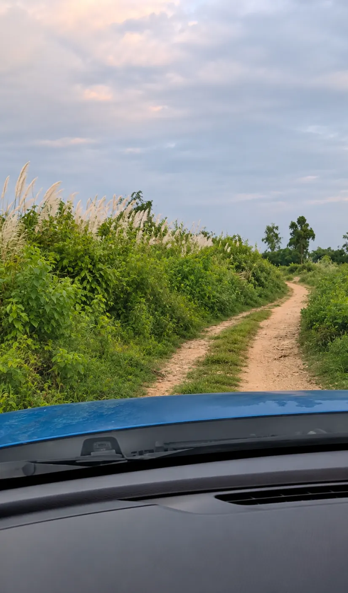

खोलामाथि तीनवटा रुखका मुढा राखिएका थिए।
ती मुढाको सहारामा मानिसहरू खोला पार गर्दा रहेछन्। गाउँका साना बालबालिकाहरू पनि विद्यालय जान त्यही बाटो प्रयोग गर्दा रहेछन्।
त्यो दृश्य देख्दा मेरो मनमा पहिलो प्रश्न उठ्यो।
वर्षौँदेखि स्थानीय सरकार छ। जनप्रतिनिधिहरू छन्। विकासका योजना बन्छन्, बजेट छुट्याइन्छ। तर एउटा सानो बस्तीका बालबालिकालाई विद्यालय पुग्न सहज बनाउने सामान्य व्यवस्था पनि किन हुन सकेन?
यो भंगाहा नगरपालिका वडा नं. ६ अन्तर्गत पर्ने श्रीनगर गाउँको कुरा हो।
श्रीनगर पुग्दाको पहिलो अनुभव
केही दिनअघि श्रीनगरका स्थानीयले हामीलाई आफ्नो गाउँमा आएर त्यहाँको अवस्था बुझिदिन आग्रह गर्नुभयो।
हामी त्यहाँ पुग्यौँ।
तर गाउँ पुग्नुअघि नै एउटा समस्याले हाम्रो ध्यान खिच्यो।

मुख्य सडकबाट श्रीनगरतर्फ लाग्ने बाटोको अवस्था निकै नाजुक थियो। साँघुरो कच्ची सडक, ठाउँठाउँमा हिलो र बाटोभरि बढेका झारपात। गाडी लिएर जान कठिन। विपरीत दिशाबाट अर्को गाडी आए एकअर्कालाई बाटो दिनसमेत मुस्किल पर्ने अवस्था।
बाटोमा सडकबत्तीको व्यवस्था पनि देखिएन।
दिनकै समयमा पुग्न कठिन हुने ठाउँमा राति आवतजावत कति असहज होला भन्ने प्रश्न मनमा आयो।
श्रीनगर मुख्यतः दलित समुदायको बसोबास रहेको एउटा सानो बस्ती हो। स्थानीयको अनुमानअनुसार त्यहाँ करिब ६० घरपरिवार र ३०० हाराहारी जनसंख्या छ।

गाउँ पुगेपछि स्थानीयसँग कुराकानी भयो।
उहाँहरूले आफ्ना समस्याहरू सुनाउनुभयो।
सडकको कठिनाइ थियो। विद्युत् आपूर्तिको समस्या थियो। गाउँमा रहेको ट्रान्सफर्मर चोरी भएपछि बिजुलीको समस्या भएको कुरा पनि उहाँहरूले सुनाउनुभयो।

समस्याहरू धेरै थिए।
तर ती सबैमध्ये एउटा विषयले मलाई विशेष रूपमा सोच्न बाध्य बनायो।
त्यो थियो, बालबालिकाको विद्यालय जाने बाटो।
कक्षा ३ पछि विद्यालय पुग्ने बाटो
स्थानीयका अनुसार गाउँमा कक्षा ३ सम्म पढाइ हुने एउटा सानो विद्यालय छ।
त्यसपछि थप पढाइका लागि बालबालिकाहरू अर्को विद्यालय जानुपर्ने रहेछ।
आफ्नै नगरपालिकाका अन्य विद्यालय पुग्न कठिन हुने भएकाले नजिकको अर्को नगरपालिकातर्फ रहेको विद्यालय जानु तुलनात्मक रूपमा सहज रहेछ।
तर त्यहाँ पुग्न बीचमा एउटा खोला पार गर्नुपर्ने।

खोलामाथि स्थायी पुल थिएन।
गाउँलेहरूले आफ्नै प्रयासमा खोलामाथि करिब २०–२५ फिट लामा तीनवटा रुखका मुढा राख्नुभएको रहेछ।
त्यही मुढाको सहारामा बालबालिका र स्थानीयवासी खोला पार गर्दा रहेछन्।
स्थानीयले सुनाएअनुसार, कहिलेकाहीँ बालबालिकाहरू खोला पार गर्दा चिप्लिने र पानीमा खस्ने घटनासमेत हुने गरेका रहेछन्। पानी बढेका बेला अवस्था अझ कठिन हुने रहेछ।
त्यो अवस्था देख्दा मलाई दुःख मात्र लागेन।
रिस पनि उठ्यो।
स्थानीय सरकारको दोस्रो कार्यकाल चलिरहँदा पनि यस्तो आधारभूत समस्या किन बाँकी छ?
कुनै ठूला भवन, सडक वा अन्य योजनाको कुरा होइन। यहाँ त बालबालिकाले विद्यालय जान प्रयोग गर्ने एउटा सामान्य बाटोको कुरा थियो।
त्यो पनि यस्तो बस्तीमा, जहाँ दैनिक जीवनका अन्य आधारभूत सुविधासमेत पर्याप्त नभएको गुनासो स्थानीयले गरिरहेका थिए।
कुनै बस्ती सानो छ भन्दैमा त्यहाँका नागरिकका आवश्यकता पनि साना हुन्छन् र?
के यस्ता बस्तीका समस्या हाम्रा योजनाको प्राथमिकतामा पर्दैनन्?
कि समस्या सुनिन्छ, तर समाधानको प्रक्रिया अगाडि बढ्दैन?
मलाई यी प्रश्नहरूको उत्तर थाहा थिएन। तर त्यहाँको अवस्था देखेपछि ती प्रश्न स्वाभाविक रूपमा उठिरहेका थिए।
दैनिक समस्यामै अल्झिएको जीवनले ठूलो सपना कहिले देख्ने?
श्रीनगरको त्यो दृश्यले मलाई अर्को गम्भीर कुरा सोच्न बाध्य बनायो।
हामी प्रायः नागरिकको सहभागिता, समाजको विकास र देशको भविष्यको कुरा गर्छौँ।
नागरिक सक्रिय हुनुपर्छ। समुदाय अगाडि बढ्नुपर्छ। मानिसले आफ्ना बालबालिकालाई राम्रो शिक्षा दिनुपर्छ। समाजको विकासमा योगदान पुर्याउनुपर्छ।
यी सबै कुरा महत्त्वपूर्ण छन्।
तर एकछिन सोचौँ।
एउटा परिवारले हरेक दिन बालबालिका विद्यालय कसरी पठाउने भन्ने चिन्ता गर्नुपर्छ।
बर्खामा खोला कसरी पार गर्ने भन्ने चिन्ता छ।
घर पुग्ने बाटोको चिन्ता छ। बिजुलीको चिन्ता छ।
यस्ता आधारभूत समस्याले नै मानिसको समय, ऊर्जा र अवसर सीमित गरिरहेका छन् भने उसले आफ्नो परिवार, समुदाय र देशको भविष्यबारे सोच्न कति अवसर पाउँछ?
समस्या केवल असुविधाको होइन।
यो अवसरको पनि प्रश्न हो।
मानिसलाई ठूलो सपना देख्न भन्नुअघि, उसलाई दैनिक जीवनका आधारभूत समस्याबाट कति राहत दिन सकेका छौँ भनेर पनि हेर्नुपर्छ।
मेरो मनमा यही कुरा चलिरहेको थियो।
गाउँलेहरूको माग ठूलो थिएन
स्थानीयले स्थायी पुलको आवश्यकता रहेको कुरा बताउनुभयो।
तर तत्कालका लागि उहाँहरूको प्रस्ताव निकै सामान्य थियो।
खोलामा राखिएका तीनवटा रुखका मुढामाथि काठका पट्टाहरू राखेर कम्तीमा पैदल आवतजावतलाई केही सहज बनाउन सकिन्छ कि?
स्थायी पुल निर्माणमा बजेट, प्राविधिक अध्ययन, जग्गा वा अन्य प्रक्रियासम्बन्धी कठिनाइ हुन सक्छन्।
ती कुरा बुझ्न आवश्यक छ।
तर दीर्घकालीन समाधानको प्रक्रिया चलिरहँदा तत्कालको कठिनाइ कम गर्न सकिने विकल्पहरू पनि खोजिनुपर्छ।
स्थानीयका अनुसार यस विषयमा वडा नेतृत्वलाई पनि आग्रह गरिएको रहेछ।
त्यो सुन्दा मेरो मनमा फेरि प्रश्न उठ्यो।
एउटा सानो सुधारका लागि पनि नागरिकले कति पटक आग्रह गर्नुपर्ने?
यहाँ प्रश्न जनप्रतिनिधिले आफ्नै खल्तीबाट पैसा खर्च गर्ने कि नगर्ने भन्ने मात्र होइन।
प्रश्न सार्वजनिक जिम्मेवारी, प्राथमिकता र नागरिकका समस्याप्रति देखाइने तत्परताको हो।
अस्थायी संरचना बनाउने विषयमा पनि सुरक्षा र प्राविधिक पक्ष महत्त्वपूर्ण हुन्छन्। तर ती विषयलाई सम्बोधन गर्दै तत्काल सम्भव हुने उपाय खोज्ने प्रयास त गर्न सकिन्छ।
समस्या बुझ्ने प्रयासदेखि सामूहिक पहलसम्म
त्यहाँको अवस्था देखेपछि मलाई लाग्यो, सबै समस्याको समाधान तत्काल गर्न नसकिए पनि एउटा कठिनाइ कम गर्न सकिने सम्भावना छ।
म अहिले कुनै सार्वजनिक पदमा छैन। न त त्यहाँका सबै समस्या समाधान गर्ने स्रोत र अधिकार नै मसँग छ।
तर त्यसैले केही गर्न सकिने ठाउँमा प्रयास नै नगर्ने भन्ने पनि भएन।
गाउँलेहरूले सुझाउनुभएको उपायलाई कसरी व्यवहारमा उतार्न सकिन्छ भनेर सोच्न थालेँ।
कस्तो सामग्री आवश्यक पर्छ? त्यसको व्यवस्था कसरी गर्ने? ढुवानी कसरी गर्ने? स्थानीय समुदायलाई कसरी सहभागी गराउने?
यी विषयमा साथीहरूसँग छलफल गरेँ।
समस्याको गम्भीरता र तत्काल केही गर्न सकिने सम्भावनाबारे साथीहरूलाई जानकारी गराएँ। त्यसपछि आवश्यक आर्थिक सहयोग, सामग्री र ढुवानीको व्यवस्था मिलाउन पहल गरियो।
मैले आफ्नो तर्फबाट आर्थिक सहयोग गर्नुका साथै साथीहरूबाट पनि सहयोग जुटाउन र कामको समन्वय गर्न भूमिका निर्वाह गरेँ।
एकजना साथीले सामग्री ढुवानीका लागि ट्र्याक्टर उपलब्ध गराउनुभयो।

गाउँलेहरू पनि श्रमदान गर्न अगाडि सर्नुभयो।
यसरी सबैको सहयोग र सहभागितामा खोलामा राखिएका मुढामाथि काठका पट्टाहरू जडान गरेर एउटा अस्थायी बाटो तयार गरियो।

यो कुनै ठूलो विकास आयोजना थिएन।
न त समस्याको स्थायी समाधान नै थियो।
तर तत्काल देखिएको कठिनाइ कम गर्न सबैजना मिलेर गरिएको एउटा प्रयास थियो।
यसले स्थानीयलाई केही सहज भएको आशा छ। यद्यपि संरचनाको सुरक्षा र टिकाउपन प्राविधिक रूपमा जाँचिन आवश्यक छ। विशेषगरी बालबालिकाको आवतजावत र वर्षायाममा खोलाको जोखिमलाई हल्का रूपमा लिन मिल्दैन।
स्थायी र सुरक्षित पुलको आवश्यकता अझै बाँकी छ।
मलाई सबैभन्दा महत्त्वपूर्ण लागेको कुरा
त्यो दिन मलाई अर्को एउटा कुराले पनि छोयो।
गाउँलेहरू समस्याको समाधानका लागि केवल अरूको प्रतीक्षा गरेर बस्नुभएको थिएन।
उहाँहरूले पहिले नै खोलामाथि तीनवटा मुढा राख्नुभएको थियो।
समस्या कम गर्ने उपाय पनि आफैँ सुझाउनुभएको थियो।
अनि काम गर्ने बेला श्रमदान गर्न पनि अगाडि सर्नुभयो।
अर्थात्, समस्या उहाँहरूलाई थाहा थियो। सम्भावित उपाय पनि सोच्नुभएको थियो। योगदान गर्ने इच्छाशक्ति पनि थियो।
आवश्यक थियो त त्यसलाई अगाडि बढाउन केही सहयोग, समन्वय र पहल।
यसले मलाई एउटा कुरा फेरि सम्झायो।
समुदायमा समस्या मात्र हुँदैनन्। त्यहाँ समस्या बुझ्ने अनुभव, समाधान खोज्ने सोच र काम गर्ने इच्छाशक्ति पनि हुन्छ।
हाम्रो भूमिका त्यस्ता आवाजहरू सुन्ने, बुझ्ने र सम्भव भएका ठाउँमा सहयोग गर्ने पनि हुनुपर्छ।
प्रश्न एउटा पुलको मात्र होइन
श्रीनगरबाट फर्किएपछि मेरो मनमा ती तीनवटा मुढा मात्र थिएनन्।
गाउँसम्म पुग्ने बाटो पनि थियो।
बिजुलीको समस्या पनि थियो।
विद्यालय जाने बालबालिकाहरू पनि थिए।
अनि आफूले भोगिरहेका समस्या समाधान गर्न प्रयासरत स्थानीय नागरिकहरू पनि थिए।
त्यसैले यो कथा एउटा अस्थायी पुलको मात्र होइन।
यो स्थानीय विकासको प्राथमिकताको पनि प्रश्न हो।
हामी विकासको मूल्याङ्कन कसरी गर्छौँ?
कति बजेट विनियोजन भयो भनेर?
कति योजना सम्पन्न भए भनेर?
कति संरचना निर्माण भए भनेर?
ती सबै कुरा महत्त्वपूर्ण छन्।
तर त्यत्तिले मात्र पुग्दैन।
काम भयो कि भएन मात्र होइन, कस्तो भयो र त्यसले नागरिकको जीवनमा के परिवर्तन ल्यायो भन्ने प्रश्न पनि उत्तिकै आवश्यक छ।
श्रीनगरका नागरिकले उठाएका आवश्यकता र तिनको समाधानका विकल्पलाई गम्भीरतापूर्वक बुझ्न आवश्यक छ।
स्थायी र सुरक्षित पुलको विषय कसरी अगाडि बढ्छ? गाउँसम्म पुग्ने सडकको अवस्था कसरी सुधारिन्छ? विद्युत् सेवा नियमित बनाउन के गर्नुपर्छ?
यी प्रश्नहरूको उत्तर खोजिन बाँकी छ।
हामीले एउटा तत्कालको प्रयास गर्यौँ।
यसलाई कुनै ठूलो उपलब्धिका रूपमा प्रस्तुत गर्न चाहन्नँ।
किनभने एउटा अस्थायी व्यवस्था बन्नु र समस्याको दीर्घकालीन समाधान हुनु फरक कुरा हुन्।
मलाई लाग्छ, यस्ता अनुभवहरूलाई सुन्नु, अभिलेख गर्नु, सम्बन्धित निकायको जिम्मेवारी बुझ्नु र समयसमयमा प्रगति खोज्नु महत्त्वपूर्ण छ।
श्रीनगरको त्यो दिनले मलाई एउटा कुरा सोच्न बाध्य बनायो।
कहिलेकाहीँ एउटा सानो खोलाले पनि हाम्रो विकासको बुझाइबारे धेरै ठूलो प्रश्न उठाइदिन्छ।
खोलामाथि राखिएका ती तीनवटा मुढा आज पनि मेरो मनमा छन्।
र त्यससँगै एउटा प्रश्न पनि।
हाम्रा विकासका प्राथमिकतामा श्रीनगरजस्ता साना बस्ती र त्यहाँका नागरिकहरू कहाँ पर्छन्?